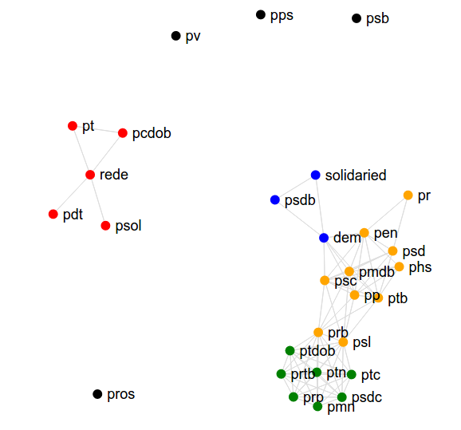

Análises - partidos mais parecidos
 *Caso queira usar a versão interativa basta usar uma tela maiorComo o grafico foi feito?
- As análises foram feitas baseadas nas votações presentes no Quem me representa.
- A similaridade entre os partidos foi definida como total de orientações iguais dividido pelo total de votações que ambos os partidos participaram.
- No gráfico estão presentes os partidos que participaram de pelo menos 5 votações e os partidos que estão ligados são partidos que possuem similaridade mínima de 75%. Ou seja, em pelo menos 75% das votações eles concordam.
Discussão
Dá para notar claramente 5 grupos:- O grupo da esquerda (vermelho), formado pelo PT, Rede, PSOL, PCdoB e PDT. Este grupo está desconectado dos demais partidos. Porém internamente ele não é tão coeso, que mostra que cada partido de esquerda tem sua bandeira.
- O grupo verde é formado por partidos menores. Este grupo é bem coeso, mostrando que eles votam de forma quase igual
- O grupo laranja é o grupo formado pelo PMDB .
- O grupo azul é o grupo do PSDB (junto com solidariedade e DEM). Como em boa parte do período 2015-2018 o PSDB foi oposição, enquanto o PMDB era situação, ele está um pouco afastado do grupo do PMDB. O partido que "conecta" os dois grupos é o DEM.
- Os partidos em preto são os que não tiveram concordância de pelo menos 75% das votações com nenhum outro partido .
Como o cálculo é feito?
- Você dá sua opinião sobre os temas.
- São selecionados os votos dos deputados nos temas que você opinou (são excluídos as abstenções e obstruções).
- Caso você tenha opinado em um tema que o deputado não votou Sim ou Não, este tema é excluído do cálculo.
- Desta maneira, é calculada a proporção de opiniões iguais, suas e do deputado.
Por exemplo: se você votou em Sim nos temas A,B e C, e o deputado votou sim no tema B e D, só é levado em conta o tema B, que está presente tanto nas suas opiniões quanto nos votos do deputado. Desta maneira, nos temas em que você e o deputado opinaram, ele lhe representa em 100%.
Cálculo envolvendo os partidos
- Em cada votação, o partido dá uma orientação de voto aos seus deputados. Utilizamos esta orientação no cálculo.
- O cálculo que fizemos é similar ao do deputado. Porém, além da exclusão das abstenções e obstruções, excluímos quando o partido não dá sua orientação (termo utilizado: liberado).
QMR na mídia
House of Cunha
No QuemMeRepresenta? você descobriu quais deputados tem opinões parecidas com a sua. Mas você quer descobrir os deputados que possuem opiniões parecidas entre si (ou seja, que votam parecido?)? E os deputados que possuem opiniões divergentes? E qual a real influência de Eduardo Cunha sobre os deputados? Essas e outras perguntas você pode ver no House of Cunha, outro projeto desenvolvido pelo Laboratório Analytics da UFCG.